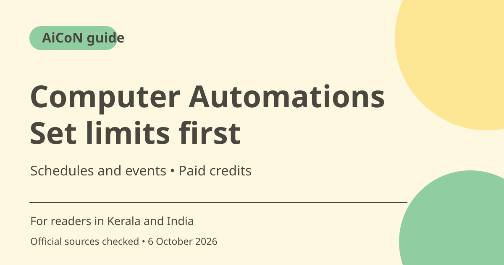

Perplexity Computer Automations: setup and credit limits
Perplexity Computer Automations run recurring assignments on a schedule or a supported event. Watching for a trigger does not consume credits, but doing the work does. Consumer Pro has no recurring monthly Computer credits, so check the balance and approval settings first.

What are Automations?
Perplexity's September 2026 announcement describes ongoing assignments that use connected tools and prior work. They replace Scheduled Tasks with schedules, event triggers and memory of earlier runs. A weekly report can compare with its previous result rather than starting from an empty brief. These are provider-described capabilities, not a personal reliability test.
Who is it useful for in Kerala and India?
A researcher or small team may want a recurring summary, competitor check or draft reply. Start with an output you can review, such as a private report. Decide which sources may be accessed and where the result should go. A recurring assignment can repeatedly disclose the wrong information if its destination or permissions are unclear.
Schedule and assignment are separate
The official guide says the schedule or event determines when work starts, while the assignment says what to do. Supported connector events include messages in services such as Gmail and Slack, with conditions to narrow the trigger. Specify the sender or channel and the desired output. Do not let a broad trigger create a job on every unrelated message.
Paid plan does not mean monthly credits on Pro
Official credit help says consumer Pro does not start with a fixed recurring monthly amount. Consumer Max starts with 10,000 credits per month. Promotional credits can have their own expiry and are not a monthly entitlement. A Pro subscription can therefore remain useful for ordinary search while Computer work needs purchased credits.
Credit spending and auto-refill
The credit help says 100 credits currently equal US$1. At a rough ~₹96.43/USD estimate, that is about ~₹96 for 100 credits, excluding checkout differences and taxes. Watching for an automation trigger is free of credit usage; running the assignment consumes credits. Auto-refill is off by default and can buy more if enabled, so review its limits carefully.
Review actions, not just text quality
The announcement describes deciding which actions can happen automatically and which need human review. For a reply or update, check recipient and content together. For file changes, check the target and whether older information is replaced. Use run history to see what triggered the assignment and what it produced, and pause the automation when its purpose ends.
How to use it, step by step
- Open Perplexity Computer through the official product route and check whether your plan and account have access.
- Inspect your Computer credit balance and expiry. Keep auto-refill off unless you deliberately want automatic credit purchases within chosen limits.
- Describe the assignment in Computer's omnibar or open Automations > New Automation.
- Name the outcome, approved sources and output destination. For a first test, choose a private draft or report rather than an automatic external send.
- Choose a schedule or supported event and narrow its conditions. Check the intended timezone for scheduled work.
- Set which actions require review and inspect connected-account permissions before enabling the job.
- Review the first result and run history. Correct the instructions, monitor credit use and pause or delete work that no longer serves its purpose.
Cost, eligibility and limits
| Plan access | Computer credits are available through supported paid plans. Check account access rather than treating the public announcement as a Free entitlement. |
|---|---|
| Consumer Pro | No fixed recurring monthly Computer-credit allowance. Any bonus has separate terms and expiry. |
| Consumer Max | Credit help lists 10,000 monthly credits; usage and account terms still apply. |
| Credit reference | 100 credits = US$1 per the checked help, roughly ~₹96 at an ~₹96.43/USD estimate. Running work consumes credits; waiting for a trigger does not. |
Frequently asked questions
Does waiting for an email use credits?
The announcement says watching for a trigger does not; carrying out the assignment does.
Does Pro include monthly Computer credits?
The checked help says consumer Pro does not have a recurring monthly allowance.
Can I pause a job?
Yes. The official guide describes editing, pausing and reviewing automation run history.
Official sources
- PTI 6 October exchange-rate report used for rough INR estimates
- Launch announcement
- Setup guide
- Credits and auto-refill
Checked 6 October 2026. Features and prices can change. This is a guide, not a personal product test.